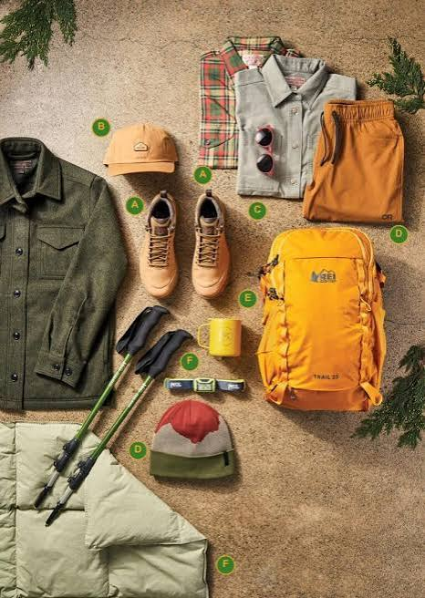

Backpacking Resources & Details
Trip Planning & Gear Resources
Proper planning, reliable equipment, and accurate navigation maps are crucial for a safe and enjoyable backpacking trip into the New York wilderness.
Where to Buy & Rent Backpacking Gear
Having reliable equipment is essential before stepping onto the trail. It is highly recommended that beginners test all gear before leaving home on an overnight trip.
Top Outdoors Outfitters & Retailers
Below are top recommended retailers where you can purchase or rent tents, sleep systems, packs, and bear canisters:
-
The Mountaineer: Located in Keene Valley, NY — a well known, local shop for mountain gear, local trail advice, and gear rentals.
Shop online at The Mountaineer Official Site -
High Peaks Cyclery: Located in Lake Placid, NY — offers gear sales, camping equipment rentals, and bear canisters.
Visit High Peaks Cyclery Online -
REI Co-op: Great national retailer for beginner gear packages, member rewards, and rental programs. Highly recommended.
Shop Backpacking Gear on REI.com -
Eastern Mountain Sports (EMS): Offers high-quality outdoor apparel, tents, sleeping bags, and backpacking accessories.
Browse Gear at Eastern Mountain Sports
Trail Selection & Navigation Maps
Cell phone service in the Adirondack backcountry is non-existent in many areas. Never rely solely on a smartphone or digital app for wilderness navigation!
Recommended Steps for Trail Planning
- Purchase a waterproof paper map covering your target zone.
- Download offline digital map sections on an app like OnX Backcountry.
- Check current DEC trail conditions and wilderness advisories online.
- Leave a detailed trip itinerary with a family member or trusted friend before heading out.

For more information on trail selection, topographic maps, and navigation techniques, visit the Adirondack Mountain Club (ADK) website.
Recommended Beginner Trail Destinations
For your first trip, choose shorter distances with minimal elevation gain near established water sources:
- Pharaoh Lake Wilderness: Gentle terrain surrounding a beautiful backcountry lake with multiple lean-tos.
- Marcy Dam / Avalanche Pass Area: Popular hub in the High Peaks region with easy access to water and campsite locations.
- Moose River Plains: Secluded flatland hiking with primitive campsites alongside scenic rivers and ponds.
Official Adirondack Park Webpages & 46er Information
The Adirondack 46ers is an organization dedicated to hikers who have successfully climbed all 46 High Peaks of the Adirondack Mountains. Becoming a 46er is a major milestone for many local hikers and backpackers.
Explore these official web pages for trail regulations, High Peak guidelines, and park updates:
- Official Adirondack 46ers Webpage — Learn about the history of the 46 High Peaks, trail safety, and membership registration.
- NYS Dept. of Environmental Conservation (DEC) Adirondack Page — Official NY State land regulations, trail closures, and campsite rules.
- Adirondack Mountain Club (ADK) Official Site — Trail maps, educational workshops, and conservation programs.
Navigation
Done exploring resources? Return to the main page here: Back to Index / Home Page.